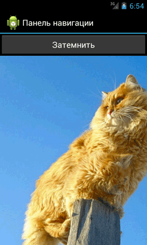
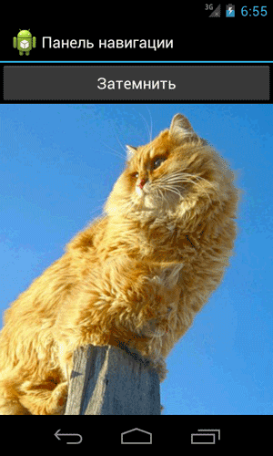
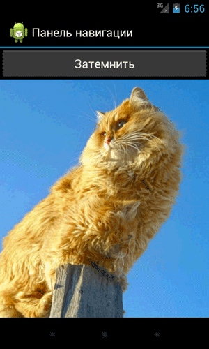

/* Моя кошка замечательно разбирается в программировании. Стоит мне объяснить проблему ей - и все становится ясно. */
John Robbins, Debugging Applications, Microsoft Press, 2000

/* Моя кошка замечательно разбирается в программировании. Стоит мне объяснить проблему ей - и все становится ясно. */
John Robbins, Debugging Applications, Microsoft Press, 2000
В Android 4.0 (точнее в Android 3.0) появилась новая панель навигации. Рассмотрим несколько примеров взаимодействия с этой панелью. Как включить панель навигации в эмуляторе написано здесь.
Следует обратить внимание на следующие вещи. Первое - поведение панели навигации на планшетах под управлением Android 3.0 немного отличается от панели навигации для устройств под управлением Android 4.0 и представленный код может не работать. Второй момент - многие брендированные телефоны имеют собственную прошивку, в которой не предусмотрена панель навигации. Яркий пример - мой Galaxy SII. Учитывайте эти факты при разработке своих приложений.
Способов управления панелью навигации не так уж и много. Точнее их всего три. Мы можем скрыть панель или затемнить её (рекомендуется использовать в играх, чтобы не отвлекала). Управляется поведение панели при помощи метода setSystemUiVisibility(), который применим к элементам View. Например, мы можем запустить приложение с скрытой панелью, но как только мы коснёмся экрана (приложение получит фокус), то панель сразу появится. Для эффекта затемнения мы приготовим кнопку. Третий способ показа панели использовать не будем, так как она и так появляется без явного вызова метода.
Для начала создадим разметку приложения с большой картинкой. Наверное, удобно было бы, если при запуске панель навигации не выводилась сразу, чтобы можно было рассмотреть картинку получше.
<?xml version="1.0" encoding="utf-8"?>
<LinearLayout xmlns:android="http://schemas.android.com/apk/res/android"
android:layout_width="fill_parent"
android:layout_height="fill_parent"
android:orientation="vertical" >
<Button
android:id="@+id/button1"
android:layout_width="match_parent"
android:layout_height="wrap_content"
android:onClick="onClick"
android:text="Button" />
<HorizontalScrollView
android:layout_width="wrap_content"
android:layout_height="wrap_content" >
<ScrollView
android:layout_width="wrap_content"
android:layout_height="wrap_content" >
<ImageView
android:id="@+id/myimageview"
android:layout_width="wrap_content"
android:layout_height="wrap_content"
android:scaleType="center"
android:src="@drawable/twocats" />
</ScrollView>
</HorizontalScrollView>
</LinearLayout>
Теперь сам код:
package ru.alexanderklimov.navigationbar;
import ...
public class NavBarAppActivity extends Activity {
ImageView myImageView;
/** Called when the activity is first created. */
@Override
public void onCreate(Bundle savedInstanceState) {
super.onCreate(savedInstanceState);
setContentView(R.layout.main);
myImageView = (ImageView) findViewById(R.id.myimageview);
// прячем панель навигации при запуске
myImageView.setSystemUiVisibility(View.SYSTEM_UI_FLAG_HIDE_NAVIGATION);
}
public void onClick(View v) {
// затемняем панель навигации
myImageView.setSystemUiVisibility(View.SYSTEM_UI_FLAG_LOW_PROFILE);
}
}
В результате, при запуске панель будет скрыта, при нажатии на экран панель появится, а при щелчке на кнопку панель станет менее заметной.
Если говорить о затемнении, то приглушается не только панель навигации, но и строка состояния над заголовком, чтобы усилить фокус на самом приложении. Перепишем код для включения/выключения эффекта
public void onClick(View v) {
int currentVis = v.getSystemUiVisibility();
int newVis;
if ((currentVis & View.SYSTEM_UI_FLAG_LOW_PROFILE) == View.SYSTEM_UI_FLAG_LOW_PROFILE) {
newVis = View.SYSTEM_UI_FLAG_VISIBLE;
} else {
newVis = View.SYSTEM_UI_FLAG_LOW_PROFILE;
}
v.setSystemUiVisibility(newVis);
}
Сначала мы узнаём текущие настройки с помощью метода getSystemUiVisibility(), а затем устанавливаем новые настройки.
  
Кстати, вы заметили, что на картинке два кота? Эх, вы. (источник)
При затемнении и скрытии мы использовали элемент ImageView в качестве компонента, который управляет флагами видимости. Сейчас в официальной документации используется другой пример, когда используется объект View, получаемый через метод getWindow().getDecorView(), хотя в комментариях говорится, что можно использовать и старый способ. Сейчас мы рассмотрим этот пример, заодно покажу, как сбросить все флаги. Для примера достаточно двух кнопок.
package ru.alexanderklimov.test;
import ...
public class MainActivity extends Activity {
View decorView;
int uiOptions = View.SYSTEM_UI_FLAG_LOW_PROFILE;
@Override
protected void onCreate(Bundle savedInstanceState) {
super.onCreate(savedInstanceState);
setContentView(R.layout.activity_main);
decorView = getWindow().getDecorView();
decorView.setSystemUiVisibility(uiOptions);
}
// Щелчок первой кнопки
public void onClick(View v) {
decorView.setSystemUiVisibility(uiOptions);
}
// Щелчок второй кнопки
public void onClick2(View v){
// вызов setSystemUiVisibility() с значением 0
// очистит все флаги
decorView.setSystemUiVisibility(0);
}
}
При нажатии первой кнопки панель навигации и строка состояния затемнятся, а при нажатии на вторую кнопку снова появятся.
Отталкиваясь от последнего примера, рассмотрим случай, когда мы хотим скрыть строку состояния, чтобы получить приложение на весь экран. Для этого нам нужно использовать флаг SYSTEM_UI_FLAG_FULLSCREEN. Такой способ рекомендуется использовать на Android 4.1 и выше. Пример для старых версий описывать не буду, ищите в документации.
public void onClick(View v) {
// во весь экран
decorView.setSystemUiVisibility(View.SYSTEM_UI_FLAG_FULLSCREEN);
}
После нажатия на кнопку, самая верхняя полоска исчезнет и заголовок приложения сдвинется вверх.
Если хотите скрыть и заголовок приложения, то добавьте ещё две строчки кода:
// При необходимости можете скрыть и заголовок приложения
ActionBar actionBar = getActionBar();
actionBar.hide();
Можно объединять флаги, например, можем скрыть панель навигации и строку состояния одновременно:
public void onClick(View v) {
int uiOptions = View.SYSTEM_UI_FLAG_HIDE_NAVIGATION
| View.SYSTEM_UI_FLAG_FULLSCREEN;
// прячем панель навигации и строку состояния
decorView.setSystemUiVisibility(uiOptions);
}
Следует помнить, что любое нажатие в области экрана заставит появиться панель навигации и строку состояния снова. Также имейте в виду, что когда пользователь нажмёт на кнопку HOME, а потом вернётся в ваше приложение, то панель и строка состояния будут видны, если вы расположение метод скрытия в метод onCreate(), который просто не сработает при возвращении. Поэтому используйте методы onResume() или onWindowFocusChanged().
По умолчанию Панель действий размещается в верхней части активности, а сама разметка активности находится под панелью. Можно переопределить это поведение, когда панель будет накладываться на разметку:
// onCreate()
getWindow().requestFeature(Window.FEATURE_ACTION_BAR_OVERLAY);
setContentView(R.layout.activity_main);
Immersive Mode - Режим погружения (Android 4.4)